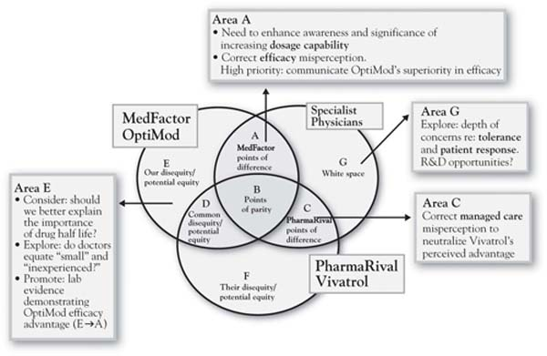

Refer back to Figure 9.1 "Ten Steps in a 3-Circle Growth Strategy Project" for a moment. Once growth ideas are initially generated in Step 5, then the important questions revolve around (a) whether or not we can substantively deliver upon those unique ideas, or (b) whether we might want to cut costs by reducing those capabilities or assets that are not contributing effectively to customer value. So Step 6 begins the process of grounding growth strategy in our existing and potential future capabilities. The questions here are what capabilities do we actually have? Are those capabilities aligned with our Area A? Do we have the substantive capabilities to defend and build our Area A? What capabilities do we need to pursue each of the growth ideas we discovered in Step 5? Step 7 then takes the necessary step of turning the microscope to competitors’ organizations in order to provide an honest look at ourselves. Do we really have capabilities, resources, or assets that are in any way truly different from those of competitors?
Figure 9.6 "The Inside View—A Brief Version of Steps 6 and 7: Overlapping Capabilities, Resources, and Assets" provides a partial analysis of what we label the inside view for Annie and her firm MedFactor versus PharmaRival. As noted in Chapter 8 "Dynamic Aspects of Markets", the two circles reflecting the inside view capture skills and assets inside the firm. The easiest way to identify the relationship between the inside view (two circles capturing capabilities) and the outside view (three circles capturing customers’ perception of needs and the ability of each player to meet those needs) is to think of cause and effect. The inside view causes the outside view. In other words, the customer benefits that we find in the customer’s assessment (the outside view) are actually produced by the capabilities, resources, and assets that we enumerate in the inside view. So the firm maximizes its competitive advantage and financial outcomes when it develops skills and resources that both (a) generate unique benefits for customers and (b) cannot be easily matched by competitors. The problem with the standard literature on the resource-based view of the firm is that it provides no mechanism by which resources and capabilities are connected to unique customer value.For the exception to this, see Burke (2006). In the analysis here, the mechanism is a careful set of questions that ask the analyst to evaluate both the existing points of difference and the potential growth ideas against the capabilities that should be in place to make them happen. Annie’s analysis for MedFactor in Figure 9.6 "The Inside View—A Brief Version of Steps 6 and 7: Overlapping Capabilities, Resources, and Assets" suggests that the firm appears to have a unique capability advantage in product development and potentially a unique capability disadvantage in the sales force (both size and organization or discipline). The analysis suggests that MedFactor’s Area A with OptiMod (higher dosage potential) is unique to the product and, along with an actual advantage in efficacy, is likely attributable to a better new product development capability. The jury is still out on whether or not these product advantages are sustainable. In this case, however, it was clear that some growth issues could be addressed specifically through more effective communications and building the sales force’s skills and tool kit around the specific hot-button issues in the value proposition—specifically, OptiMod’s currently underappreciated efficacy advantage and the misperception about the managed-care disadvantage.
Figure 9.5 Growth Strategy Priorities for OptiMod
